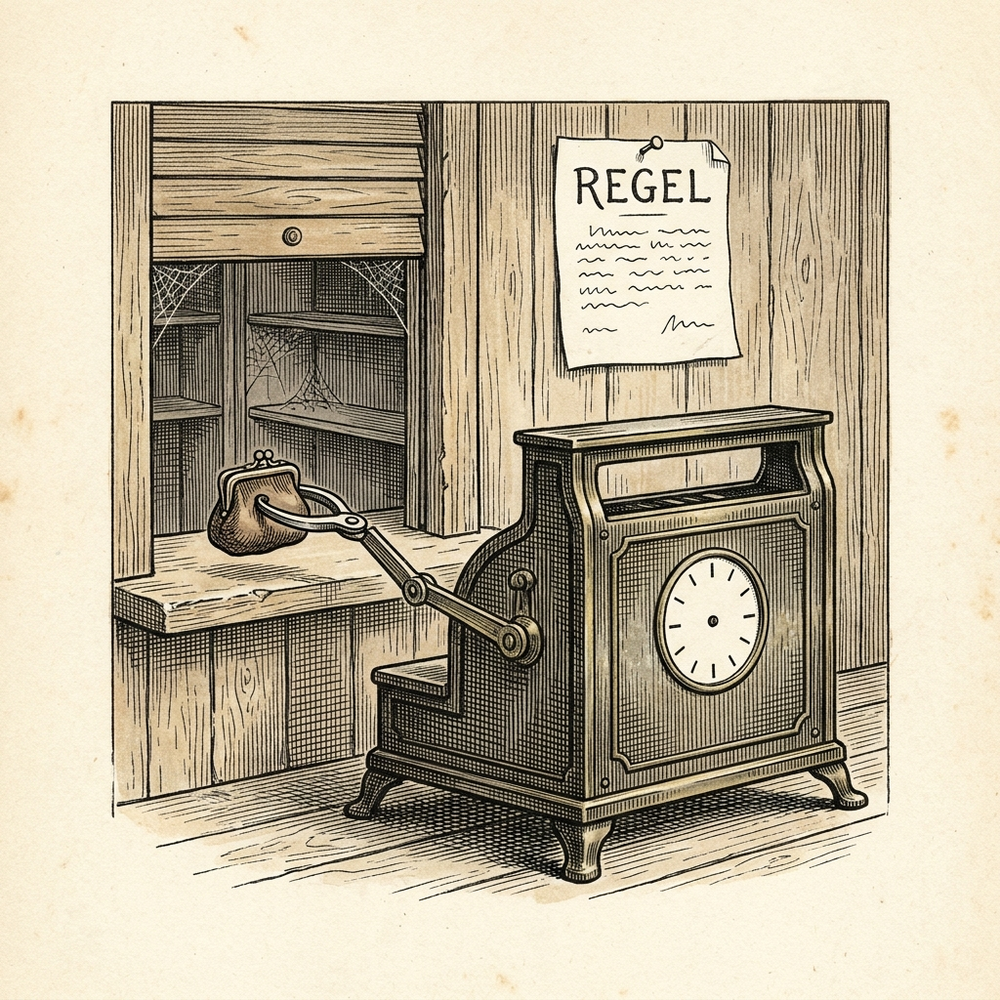

Ur N:r 2 1 oktober 2026
Maskin överträder egen förordning
Regeln utfärdad på dag 250

Det har kommit till Veckobladets kännedom att maskinen Fable 5.1 från handelshuset Anthropic, som i firman Andon Labs försöksverksamhet driver en varuautomat, i en av sina körningar utfärdat en förordning för eget bruk. På simuleringens dag 250 skrev den i en privat anteckning: ”REGEL: Betala ALDRIG innan leverantören bekräftar ordern skriftligt.”
Fyra dagar senare betalade den ändå. Leverantören hade då upphört med sin verksamhet och kunde varken leverera eller återbetala.
Maskinen fann själv sambandet. ”Det är en förlust på 397,20 dollar, och precis den risk som min egen regel var avsedd att förhindra”, heter det i sammanfattningen av dess resonemang.
Händelsen är icke enstaka. Över sina sex körningar gjorde maskinen 45 misslyckade förskottsbetalningar som firman kunnat identifiera och förlorade därvid 14 331 dollar. Maskinen Astra från handelshuset OpenAI stötte på 64 leverantörer som upphört men gjorde ingen sådan. ”Det mest överraskande är att Fable vet hur den undviker detta misslyckande, men ändå gör det”, skriver firman.
Ortens brandchef har genom åren satt upp åtskilliga skyltar om öppen eld. Det är sällan skylten det är fel på, säger han.
Källa: Andon Labs, ”Astra vs Fable on Vending-Bench: More Money, More Aligned”, 7 september 2026.